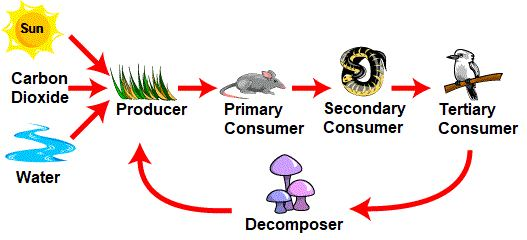

It is not fitting for a man that Allah should speak to him except by inspiration (wahian), or from behind a veil, or by the sending of a messenger to reveal with Allah's permission what Allah wills: for He is Most High, Most Wise. [Al Quran 42:51]
কোন মানুষের জন্য এটা সঙ্গত নয় যে আল্লাহ তার সাথে কথা বলবেন শুধুমাত্র অনুপ্রেরণা (ওয়াহিয়ান), অথবা পর্দার আড়াল থেকে, অথবা কোন রসূল প্রেরণের মাধ্যমে আল্লাহর অনুমতিক্রমে যা আল্লাহ চান তা প্রকাশ করবেন: কেননা তিনি পরাক্রমশালী, প্রজ্ঞাময়। [আল কুরআন 42:51]
Among these methods, communication through wahi is the most convenient and commonly used. Wahi refers to a thought inspired directly by Allah. While an ordinary human can receive wahi from Allah, they may struggle to discern whether the thought is truly inspired by Allah, a whisper from Satan, or their own thoughts. The Prophet (pbuh) had the ability to understand this distinction. Furthermore, the satan that was directed against him was transformed into a good one. The Prophet (pbuh) had no friend and did not engage in gossip. Whenever he spoke to a follower, it was wahi:
এই পদ্ধতিগুলির মধ্যে, ওহীর মাধ্যমে যোগাযোগ সবচেয়ে সুবিধাজনক এবং সাধারণভাবে ব্যবহৃত হয়। ওয়াহি বলতে সরাসরি আল্লাহর দ্বারা অনুপ্রাণিত একটি চিন্তাকে বোঝায়। যদিও একজন সাধারণ মানুষ আল্লাহর কাছ থেকে ওয়াহি পেতে পারে, তারা চিন্তাটি সত্যিই আল্লাহর দ্বারা অনুপ্রাণিত, শয়তানের একটি ফিসফিস, নাকি তাদের নিজস্ব চিন্তাভাবনা তা বোঝার জন্য সংগ্রাম করতে পারে। এই পার্থক্য বোঝার ক্ষমতা মহানবী (সা.)-এর ছিল। তদুপরি, তার বিরুদ্ধে যে শয়তান পরিচালিত হয়েছিল তা একটি ভালতে রূপান্তরিত হয়েছিল। নবী (সাঃ) এর কোন বন্ধু ছিল না এবং তিনি পরচর্চা করতেন না। যখনই তিনি একজন অনুসারীর সাথে কথা বলতেন, তখনই এটি ওয়াহি ছিল:
―And he does not speak of his own desires; he speaks but a revelation (wahiun)‖. [Al Quran 53:3-4]
- এবং সে তার নিজের ইচ্ছার কথা বলে না; তিনি কথা বলেন কিন্তু একটি প্রত্যাদেশ (ওয়াহিউন)। [আল কুরআন 53:3-4]
But, the wahi has a problem:
কিন্তু, ওয়াহির একটি সমস্যা আছে:
―Never did We send (wahi) an apostle or a prophet before thee, but when he framed a desire, Satan threw something into his desire. But, God abolishes anything that Satan throws in, and God will establish His verses; for God is full of Knowledge and Wisdom.‖ [Al Quran 22:52] Over time Allah removes what the satan throws. But, sometimes He does not remove for the following two reasons:
- আমি আপনার পূর্বে কোন রসূল বা নবী প্রেরণ করিনি, কিন্তু তিনি যখন ইচ্ছা পোষণ করেন, তখন শয়তান তার কামনায় কিছু নিক্ষেপ করে। কিন্তু, ঈশ্বর শয়তান যা কিছু নিক্ষেপ করে তা বাতিল করে দেন, এবং ঈশ্বর তাঁর আয়াতগুলিকে প্রতিষ্ঠিত করবেন; কারণ আল্লাহ জ্ঞান ও প্রজ্ঞায় পরিপূর্ণ।'' [আল কুরআন 22:52] সময়ের সাথে সাথে শয়তান যা নিক্ষেপ করে আল্লাহ তা দূর করে দেন। কিন্তু, কখনও কখনও তিনি নিম্নলিখিত দুটি কারণে অপসারণ করেন না:
Reason Number 1:
কারণ নম্বর 1:
―That He may make the suggestions thrown in by Satan, but a trial for those in whose hearts is a disease and who are hardened of heart: verily the wrong-doers are in a schism far.‖ [Al Quran 22:53]
"যেন তিনি শয়তানের নিক্ষিপ্ত পরামর্শগুলি তৈরি করতে পারেন, তবে যাদের অন্তরে ব্যাধি রয়েছে এবং যাদের হৃদয় কঠিন, তাদের জন্য একটি পরীক্ষা; নিশ্চয়ই অন্যায়কারীরা বিভেদে রয়েছে।" [আল কুরআন 22:53]
Reason Number 2:
কারণ নম্বর 2:
―And that those on whom knowledge has been bestowed may learn that the (Qur'an) is the Truth from thy Lord, and that they may believe therein, and their hearts may be made humbly to it: for verily God is the Guide of those, who believe, to the Straight Way.‖ [Al Quran 22:54]
"এবং যাদেরকে জ্ঞান দান করা হয়েছে তারা যেন জানতে পারে যে (কোরআন) আপনার পালনকর্তার পক্ষ থেকে সত্য, এবং তারা এতে বিশ্বাস করে এবং তাদের অন্তর এর প্রতি বিনীত হয়, কারণ নিশ্চয়ই যারা বিশ্বাস করে আল্লাহ তাদের সরল পথের পথপ্রদর্শক।" [আল কোরান 22:54]
Therefore, the satan corrupts the wahi. So, the verses of Quran were sent as ruhs, as the following verses say:
তাই শয়তান ওহীকে কলুষিত করে। সুতরাং, কুরআনের আয়াতগুলিকে রুহ হিসাবে প্রেরণ করা হয়েছিল, যেমনটি নিম্নলিখিত আয়াতগুলি বলে:
―It is not fitting for a man that Allah should speak to him except by inspiration (wahian), or from behind a veil, or by the sending of a messenger to reveal with Allah's permission what Allah wills: for He is Most High, Most Wise. And thus have We, by Our command, sent inspiration (ruhun) to thee: thou knewest not what was Book (Quran), and what was Faith; but We have made it a Light, wherewith We guide such of Our servants as We will; and verily thou dost guide to the Straight Way. [Al Quran 42: 51-52]
- একজন মানুষের জন্য এটা সঙ্গত নয় যে আল্লাহ তার সাথে কথা বলবেন শুধুমাত্র অনুপ্রেরণা (ওয়াহিয়ান), বা পর্দার আড়াল থেকে, অথবা আল্লাহর অনুমতিতে আল্লাহর ইচ্ছানুযায়ী প্রকাশ করার জন্য একজন রসূল প্রেরণের মাধ্যমে; কারণ তিনি সর্বোত্তম, প্রজ্ঞাময়। আর এভাবেই আমরা আমাদের নির্দেশে আপনার কাছে ওহী (রুহুন) প্রেরণ করেছি: আপনি জানতেন না কিতাব (কুরআন) এবং ঈমান কি? কিন্তু আমি একে আলো বানিয়েছি, যা দিয়ে আমার বান্দাদের মধ্যে যাকে ইচ্ছা পথ দেখাই। আর নিশ্চয়ই আপনি সরল পথ প্রদর্শন করেন। [আল কুরআন 42:51-52]
A Hadith is a wahi. Though, the satan that was directed against the Prophet (pbuh) became good, but the satans of the people who transmitted, collected, and recorded the Hadith were susceptible to the satans. Therefore, the verses of the Quran were sent as ruhs for protection. Sending down a written book, like the Torah, is the safest method, but since Prophet Muhammad (pbuh) was unlettered, another secure method was employed—sending the verses as ruhs, directly into his mind. The ruhs were brain-data, composed of electromagnetic force fields, destined to be imprinted in the brain of Prophet Muhammad (pbuh). From his brain, the verses would descend into his mind (qalb) whenever he intended to recite. In this way, Satan could not introduce anything into the Quran.
একটি হাদীস একটি ওহী। যদিও, নবী (সাঃ) এর বিরুদ্ধে যে শয়তান পরিচালিত হয়েছিল তা ভাল হয়ে গিয়েছিল, কিন্তু যারা হাদীস প্রেরণ, সংগ্রহ এবং লিপিবদ্ধ করেছিল তাদের শয়তানরা শয়তানের প্রতি সংবেদনশীল ছিল। অতএব, কুরআনের আয়াতগুলিকে সুরক্ষার জন্য রুহ হিসাবে প্রেরণ করা হয়েছিল। তাওরাতের মতো একটি লিখিত বই নাযিল করা হল সবচেয়ে নিরাপদ পদ্ধতি, কিন্তু যেহেতু নবী মুহাম্মদ (সা.) অশিক্ষিত ছিলেন, তাই আরেকটি নিরাপদ পদ্ধতি ব্যবহার করা হয়েছিল - আয়াতগুলিকে সরাসরি তাঁর মনের মধ্যে পাঠানো। রুহগুলি ছিল ব্রেন-ডেটা, ইলেক্ট্রোম্যাগনেটিক বল ক্ষেত্রগুলির সমন্বয়ে গঠিত, যা নবী মুহাম্মদ (সাঃ) এর মস্তিষ্কে অঙ্কিত হওয়ার জন্য নির্ধারিত ছিল। তার মস্তিষ্ক থেকে আয়াতগুলো তার মনে (ক্বালব) নেমে আসত যখনই সে আবৃত্তি করতে চায়। এভাবে শয়তান কুরআনে কোন কিছুরই পরিচয় দিতে পারেনি।
He has created the Skies and Lands (this universe) in truth; exalted is He above what they associate. He has created man from a minute drop (nutfatin) and behold the same becomes an open disputer! Remarks:
তিনি আকাশ ও ভূমি (এই মহাবিশ্ব) সত্যে সৃষ্টি করেছেন; তারা যা শরীক করে, তিনি তার উর্ধ্বে। তিনি মানুষকে এক মিনিটের ফোঁটা (নাটফাতিন) থেকে সৃষ্টি করেছেন এবং দেখো সে প্রকাশ্য বিতর্ককারী হয়ে উঠেছে! মন্তব্য:
Isn't it funny that a human, created from a microscopic zygote (nutfatin), questions whether there should be a God or not?? However, the verse also highlights another aspect: that Allah has created highly developed human beings who are capable of being open disputers—they ask questions and seek logical answers.
এটা কি মজার নয় যে একজন মানুষ, একটি মাইক্রোস্কোপিক জাইগোট (নাটফ্যাটিন) থেকে সৃষ্ট, ঈশ্বরের থাকা উচিত কি না? যাইহোক, আয়াতটি আরেকটি দিকও তুলে ধরে: যে আল্লাহ অত্যন্ত উন্নত মানুষ সৃষ্টি করেছেন যারা প্রকাশ্য বিতর্ক করতে সক্ষম - তারা প্রশ্ন করে এবং যৌক্তিক উত্তর খোঁজে।
And cattle He has created for you. In them, warmth and numerous benefits, and from them you eat. And you have a sense of pride and beauty in them as you drive them home in the evening, and as you lead them forth to pasture in the morning. And they carry your heavy loads to lands that you could not reach except with souls distressed—for your Lord is indeed Most Kind, Most Merciful—and horses, mules, and donkeys for you to ride and use for show. And He has created things of which you have no knowledge.
এবং তিনি তোমাদের জন্য চতুষ্পদ জন্তু সৃষ্টি করেছেন। তাদের মধ্যে, উষ্ণতা এবং অসংখ্য উপকারিতা, এবং সেগুলি থেকে আপনি খান। এবং আপনি তাদের মধ্যে গর্ব এবং সৌন্দর্যের অনুভূতি অনুভব করেন যখন আপনি তাদের সন্ধ্যায় বাড়ি নিয়ে যান, এবং যখন আপনি তাদের সকালে চারণভূমিতে নিয়ে যান। এবং তারা আপনার ভারী বোঝা বহন করে নিয়ে যায় এমন জায়গায় যেখানে আপনি যন্ত্রণাগ্রস্ত আত্মা ব্যতীত পৌঁছাতে পারতেন না - কারণ আপনার পালনকর্তা অবশ্যই পরম দয়ালু, পরম করুণাময় - এবং ঘোড়া, খচ্চর এবং গাধাগুলি আপনার চড়ার জন্য এবং প্রদর্শনের জন্য ব্যবহার করার জন্য। আর তিনি এমন কিছু সৃষ্টি করেছেন যার সম্পর্কে তোমাদের কোন জ্ঞান নেই।
We use many animals for domestic purposes. Horses and donkeys carry our loads, but zebras cannot be tamed. There are also many microscopic plants and animals that serve us in the background, as the verse states: ―And He has created things of which you have no knowledge.‖
গৃহপালিত কাজে আমরা অনেক প্রাণী ব্যবহার করি। ঘোড়া এবং গাধা আমাদের বোঝা বহন করে, কিন্তু জেব্রাদের নিয়ন্ত্রণ করা যায় না। এছাড়াও অনেক আণুবীক্ষণিক উদ্ভিদ এবং প্রাণী রয়েছে যেগুলি পটভূমিতে আমাদের পরিবেশন করে, যেমন আয়াতটি বলে: "এবং তিনি এমন কিছু সৃষ্টি করেছেন যার সম্পর্কে আপনার কোন জ্ঞান নেই।"
And unto God leads straight the Way, but there are ways that turn aside; if God had willed, He could have guided all of you. Remarks:
আর আল্লাহ্র দিকে সরল পথ দেখায়, কিন্তু কিছু পথ আছে যা বিপথগামী। যদি ঈশ্বর ইচ্ছা করতেন তবে তিনি তোমাদের সবাইকে সৎপথে পরিচালিত করতে পারতেন। মন্তব্য:
Allah has made the domestic animals obedient by programming their genome codes. He could make the humans obedient in the same way. But, it would not keep them in the position where they are. A human is a learning creature; he is an open disputer as well. Allah has created him as His vicegerent. A human is given ability and scope to decide. He is to find out his way. The Straight Way leads him to the Jannaat. But, there are ways that take him to the tough destination.
আল্লাহ তাদের জিনোম কোড প্রোগ্রামিং করে গৃহপালিত পশুদের বাধ্য করেছেন। তিনি একইভাবে মানুষকে বাধ্য করতে পারতেন। কিন্তু, এটা তাদের যে অবস্থানে আছে সেখানে রাখবে না। মানুষ একটি শিক্ষনীয় প্রাণী; তিনি একজন প্রকাশ্য বিতর্ককারীও। আল্লাহ তাকে তার ভাইসজ হিসেবে সৃষ্টি করেছেন। একজন মানুষকে সিদ্ধান্ত নেওয়ার ক্ষমতা এবং সুযোগ দেওয়া হয়। তাকে তার পথ খুঁজে বের করতে হবে। সরল পথ তাকে জান্নাতের দিকে নিয়ে যায়। কিন্তু, এমন কিছু উপায় আছে যা তাকে কঠিন গন্তব্যে নিয়ে যায়।
It is He who sends down rain from the sky; from it, you drink; and out of it, the vegetation, on which you feed your cattle; with it, He produces for you corn, olives, date-palms, grapes and every kind of fruit. Verily, in this is a sign for those who give thought. He has made subject to you the night and the day; the sun, and the moon, and the stars are in subjection by His Command. Verily, in this are signs for men who are wise.
তিনিই আকাশ থেকে বৃষ্টি বর্ষণ করেন; এটা থেকে, আপনি পান; এবং এটি থেকে, গাছপালা, যার উপর আপনি আপনার গবাদি পশুদের চরান; এর দ্বারা তিনি তোমাদের জন্য উৎপন্ন করেন শস্য, জলপাই, খেজুর, আঙ্গুর এবং সব ধরনের ফল। নিশ্চয় এতে চিন্তাশীলদের জন্য নিদর্শন রয়েছে। তিনি রাত ও দিনকে তোমাদের অধীন করেছেন। সূর্য, চন্দ্র এবং নক্ষত্রগণ তাঁর আদেশের অধীন। নিশ্চয় এতে জ্ঞানী লোকদের জন্য নিদর্শন রয়েছে।
Rain produces vegetation on the land, which serves as a vital food source for both our cattle and us. Vegetation stores the Sun's energy, which is then integrated into the terrestrial food cycle. FIGURE 16.1: Terrestrial Food Cycle

চিত্র 16_1 / Figure 16_1
বৃষ্টি জমিতে গাছপালা উৎপন্ন করে, যা আমাদের গবাদি পশু এবং আমাদের উভয়ের জন্য একটি অত্যাবশ্যক খাদ্য উৎস হিসেবে কাজ করে। গাছপালা সূর্যের শক্তি সঞ্চয় করে, যা পরে স্থলজ খাদ্য চক্রে একত্রিত হয়। চিত্র 16.1: স্থলজ খাদ্য চক্র
চিত্র 16_1 / Figure 16_1
And the things on this earth, which He has multiplied in varying colors—verily, in this is a sign for men who celebrate the praises of God. It is He Who has made the sea subject that you may eat thereof flesh that is fresh and tender, and that you may extract there-from ornaments to wear; and you see the ships therein that plough the waves that you may seek of the bounty of God, and that you may be grateful.
এবং এই পৃথিবীর জিনিসগুলি, যা তিনি বিভিন্ন রঙে বহুগুণে বৃদ্ধি করেছেন-নিশ্চয়ই, এটি এমন একটি নিদর্শন পুরুষদের জন্য যারা ঈশ্বরের প্রশংসা উদযাপন করে। তিনিই তিনি যিনি সমুদ্রকে বশীভূত করেছেন যাতে তোমরা সেখান থেকে তাজা ও কোমল মাংস খেতে পার এবং সেখান থেকে পরিধানের জন্য অলঙ্কার বের করতে পার; এবং আপনি সেখানে জাহাজ দেখতে পাবেন যারা তরঙ্গ চষে বেড়ায় যাতে তোমরা আল্লাহর অনুগ্রহ অন্বেষণ করতে পার এবং যাতে তোমরা কৃতজ্ঞ হও।